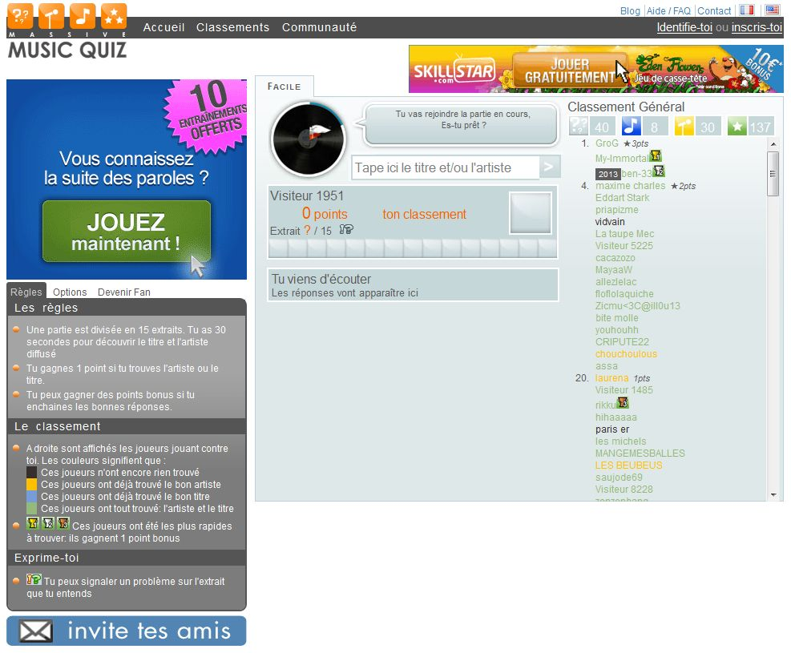

👨🏻🍳 Ma recette du
side-project heureux
Moi c'est Thomas 👋
Je code des deux cotés de la requête HTTP.
L'intêret des projets perso :
- 🧠 Apprendre
- 💡 Innover
- 🕹️ S'amuser
La malediction 😱

Les ingrédients d'un projet réussi
La motivation 🔥
"Pourquoi je fais ça ?"
Il était une fois ...
Curve Fever

Curvytron

Massive Music Quizz
What the Tune?!

Un motif qui se répète ? 🤔
Le plagiat !

Mon projet
résoud
mon problème.
Piloté par le besoin utilisateur
Encore faut-il le sortir ...
La prod 🚀

Sortez votre projet tôt,
pas parfait.
Cercle vertueux d'utilisation
Garden

À la rencontre des utilisateurs 🎉
Les demandes utilisateur 🙋
C'est quoi ton business-model ? 💰
L'effet instagram 💔
Une vision 💭
Ma recette du
side-project heureux :
- Être utile
- Sortir tôt
- Suivre sa vision